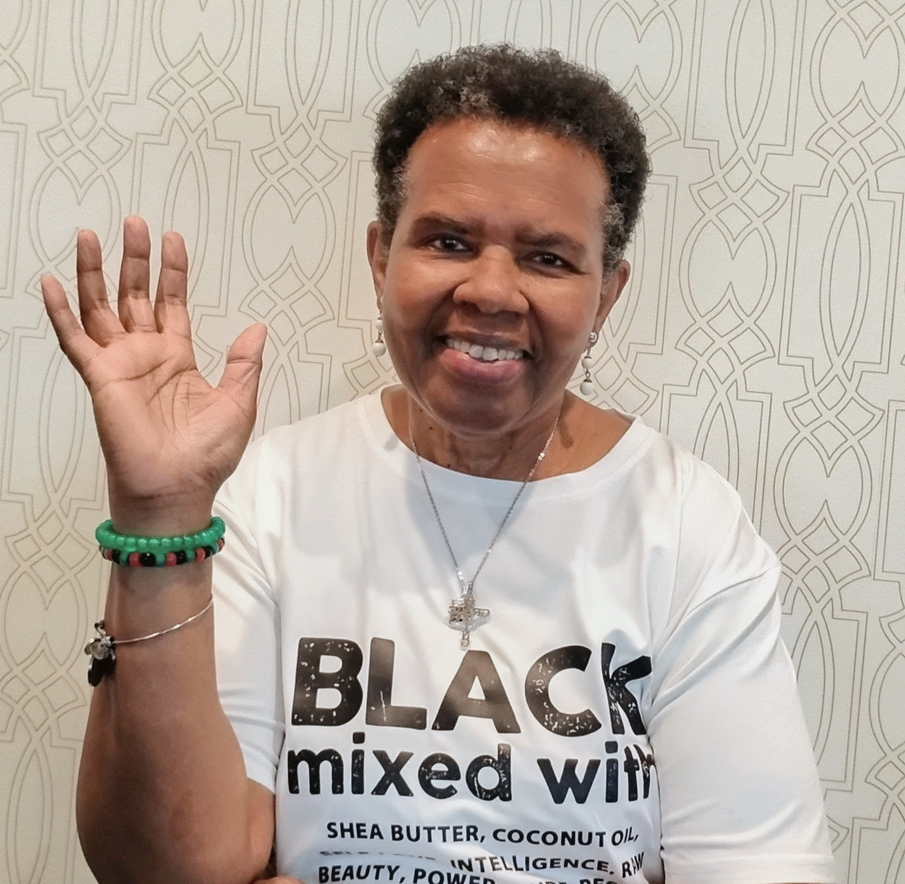

A Memoir of Family, Race, and Resilience
A Struggle to Belong is about belonging — how it’s formed, how it’s shaken, and how it’s reclaimed. Belonging is a need everyone has. This memoir tells the story of one young girl’s journey to find her place within her family, race, and community.
Listen to two short excerpts from the memoir:
Protest Baby
Ours is Better

Journalist Carolyn K. Erwin has spent her career writing about Black life and culture. She began as a staff reporter for the Baltimore Afro‑American and later became an Assistant Editor for JET and EBONY magazines, where she told the stories of well‑known Black entertainers, public figures, educators, and athletes.
Carolyn grew up between two worlds: the one her parents created for her, and the real one they tried to shield her from. In her debut memoir, A Struggle to Belong, Carolyn offers an intimate portrait of her life growing up in a well‑off Black family in Baltimore during the 1950s and 60s, where segregation, racial violence, and Civil Rights protests were realities outside her home. As far as she knew, hers was a typical American family, like the ones she saw on television.
She grew as her parents wanted — confident, supported, knowing her worth. Carolyn's lived experience shows how her family instilled belonging at home, while buffering her from outside forces that would have made her feel less than. Her desire to become the first in her family to go to college met its test when she enrolled at a historically white college that had excluded Black students. There, she encountered racial hostility in ways she had not expected or experienced before.
For readings, interviews, or pre‑order notifications, please contact:
info.astruggle2belong@gmail.com